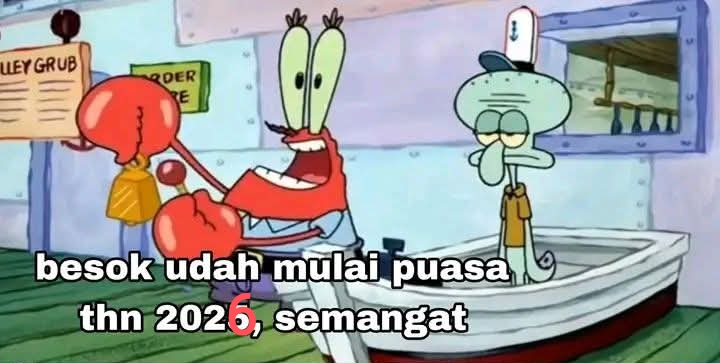

Marhaban tiba marhaban tiba
Alhamdulillah masih diberikan kesempatan buat bertemu bulan Ramadhan tahun ini.
Semoga kita bisa ikut serta meramaikan puasa tahun ini, dan diberikan kelancaran.
Rasanya begitu gembira ketika kita memasuki bulan Ramadhan, akan banyak kegiatan kegiatan dan mushola-mushola mulai ramai,waktu sore mulai rame.
Semoga kita bisa beribadah dengan maksimal di bulan puasa tahun ini dan harus bisa menghindari hal-hal yg membuat kita tergoda imannya heheh.
Selamat menjalankan ibadah puasa buat besok, dan selamat menjalankan ibadah puasa yg hari ini sudah puasa.
Taqabbalallahu minna wa minkum, wa ja’alana wa iyyakum minal aidin wal faizin
Terimakasih 😁😁😁.